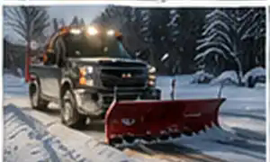
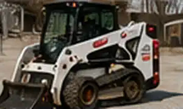
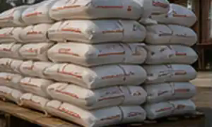
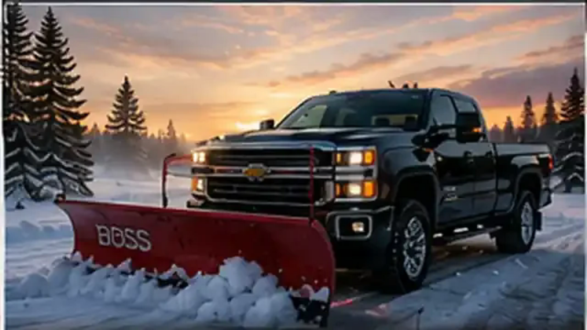

Snow & Ice Management
Plowing, salting, sanding and seasonal contracts to keep your property safe.
Learn More →Professional property maintenance and snow management for homes, businesses and commercial properties.

Plowing, salting, sanding and seasonal contracts to keep your property safe.
Learn More →

Grading, driveways, tree work, brush removal and general property cleanup.
Learn More →

Northern Lakes Property Maintenance LLC is locally owned and operated in Grand Rapids, Minnesota. We take pride in honest work, fair pricing and treating every property like it is our own.
